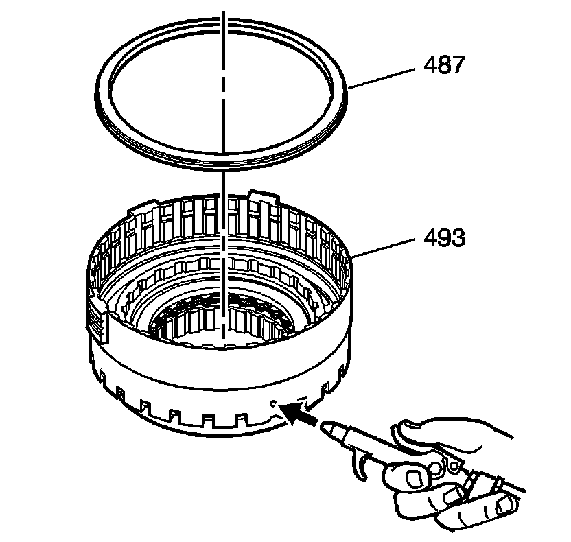

Overdrive and Intermediate Clutch Disassemble
Overdrive and Intermediate Clutch Disassemble
Tools Required
* J 23327 Clutch Spring Compressor
* J 44764 Clutch Spring Compressor

1. Remove the overdrive clutch retainer (480) from the overdrive clutch housing (493).
2. Remove the overdrive clutch backing plate (481) from the overdrive clutch housing (493).
3. Remove the overdrive clutch plates (482, 483). Refer to Clutch Plate Selection Specifications (Clutch Plate Selection Specifications) .
4. Remove the overdirve clutch spacer (484) from the overdrive clutch housing (493).

5. Use J 44764 and J 23327 to comress the overdrive clutch piston spring (486).
6. Remove the overdrive clutch piston spring retainer ring (485) from the overdrive clutch housing (493).
7. Remove J 44764 and J 23327 from the overdrive clutch housing (493).
8. Remove the overdrive clutch spring (486) from the overdrive clutch housing (493).

Important: It may be necessary to use air pressure to remove the piston.
9. Remove the overdrive clutch piston (487) from the overdrive clutch housing (493).

10. Remove the intermediate clutch backing plate retainer ring (488) from the overdrive clutch housing (493).
11. Remove the intermediate clutch backing plate (489) from the overdrive clutch housing (493).
12. Remove the intermediate clutch plates (490, 491) from the overdrive clutch housing (493). Refer to Clutch Plate Selection Specifications (Clutch Plate Selection Specifications) .
13. Remove the intermediate clutch apply plate (492) from the overdrive clutch housing (493).

14. Use J 44764 and J 23327 to compress the intermediate clutch housing (496).
15. Remove the intermediate clutch housing retainer ring (497) from the overdrive clutch housing (493).

16. Remove J 44764 and J 23327 from the overdrive clutch housing (493).
17. Remove the intermediate clutch housing (496), and the intermediate clutch spring (494) from the overdrive clutch housing (493).

18. Remove the intermediate clutch piston (495) from the overdrive clutch housing (496).